TECH WITH SALMAN / LOCAL REVIEW / 28 OCT 2026
A complete traffic fleet.
Five original CC0 vehicle models replace the box-built traffic. Real Chrome captures show the same highway and Ferrari with the upgraded moving fleet.
59.9 FPSGTX 1060 / 1600 × 1000
~44% fewerDRAW CALLS / 12 MOVING VEHICLES
20 + 29TRAFFIC + GAMEPLAY CHECKS PASSED
Development only. No commits, pushes or deployment. Close-ups are posed in-engine; driving frames use the running game. The semi uses a simpler cab exterior than the passenger cars.
Before & after / live traffic


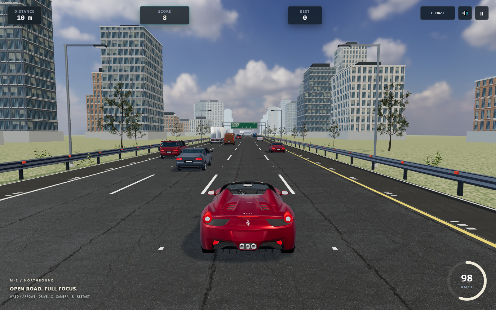
External tracking / upgraded moving fleet

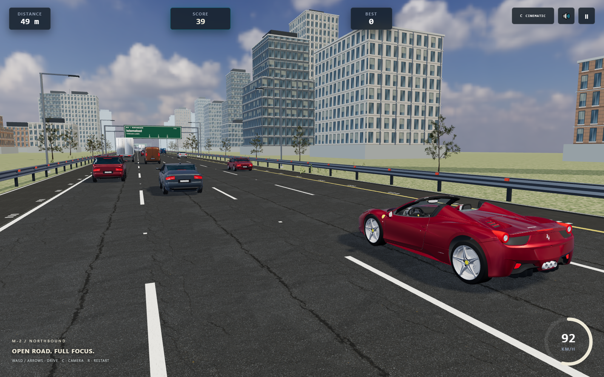
Graphite four-door sedan

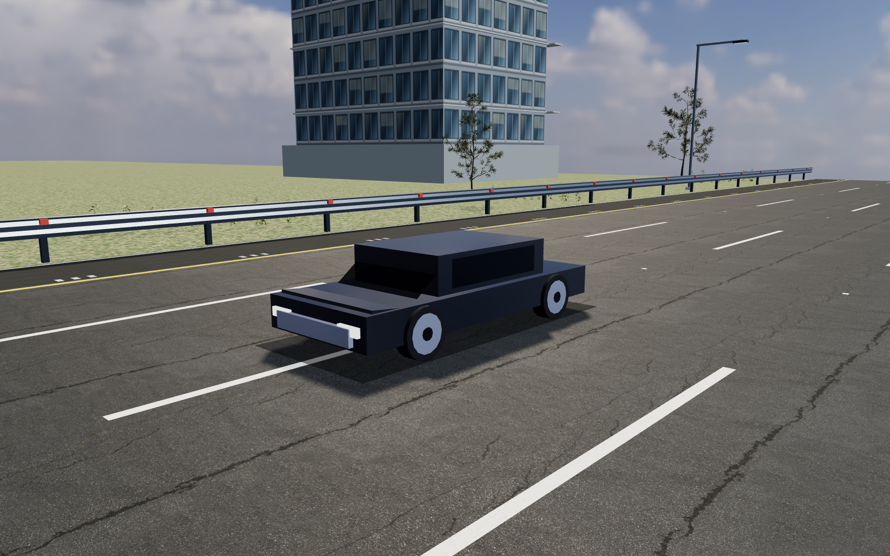

Charcoal five-door crossover SUV

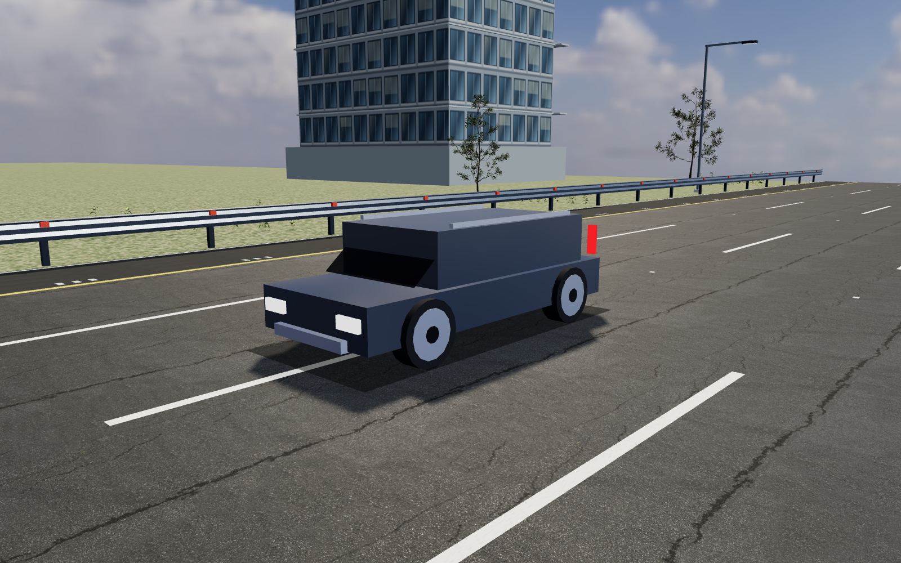

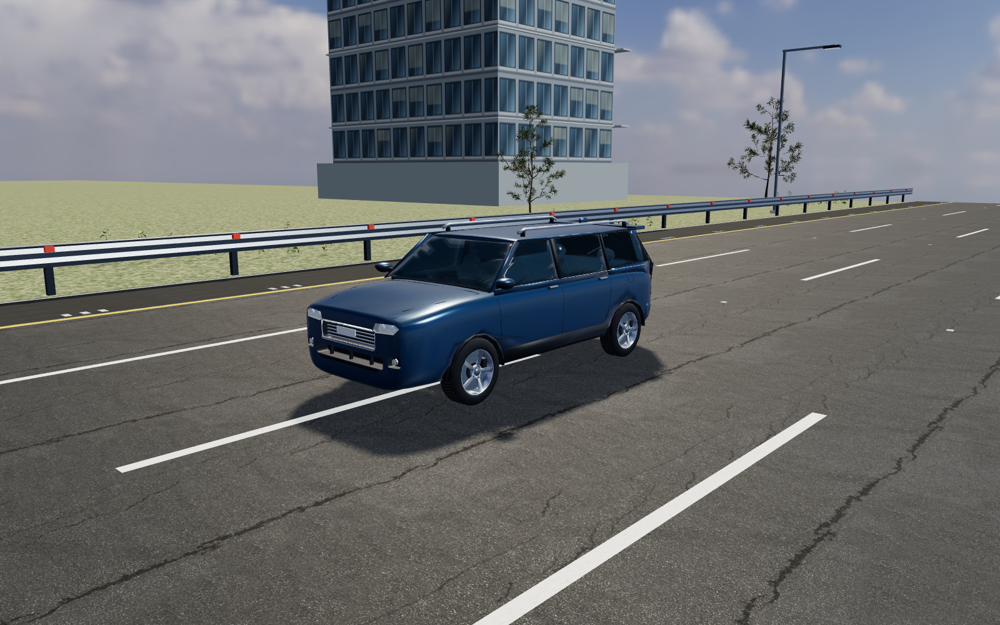
Generic 1990s Japanese-style sports coupe

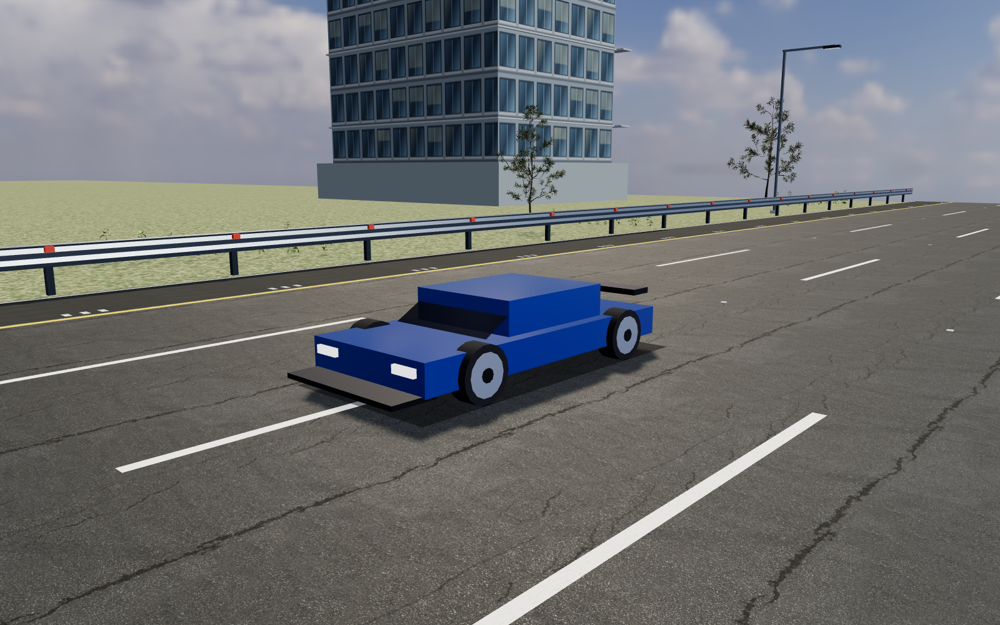

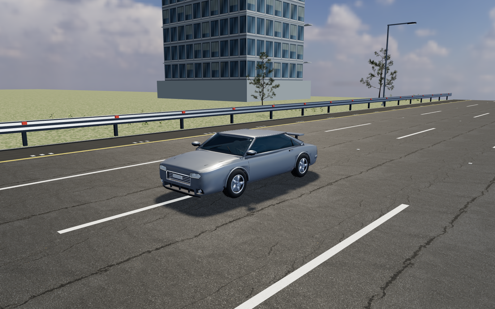
High-roof cargo panel van

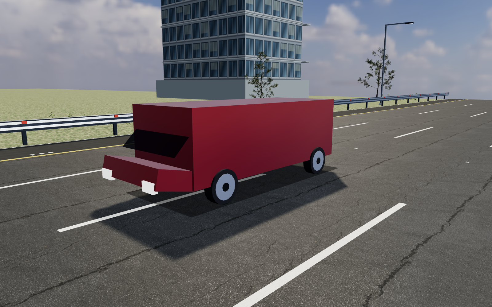

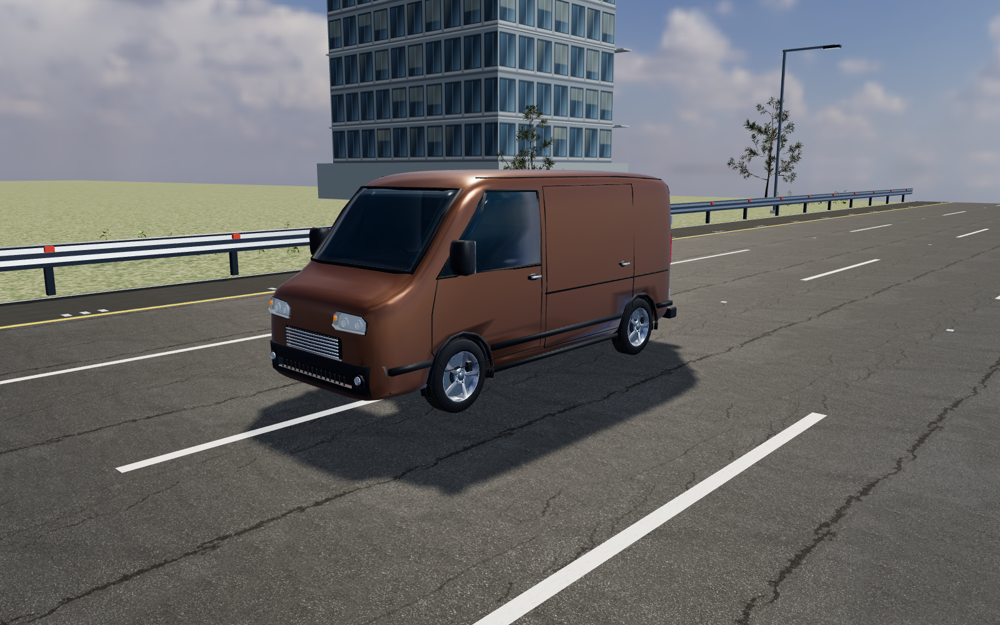
Semi tractor and box trailer

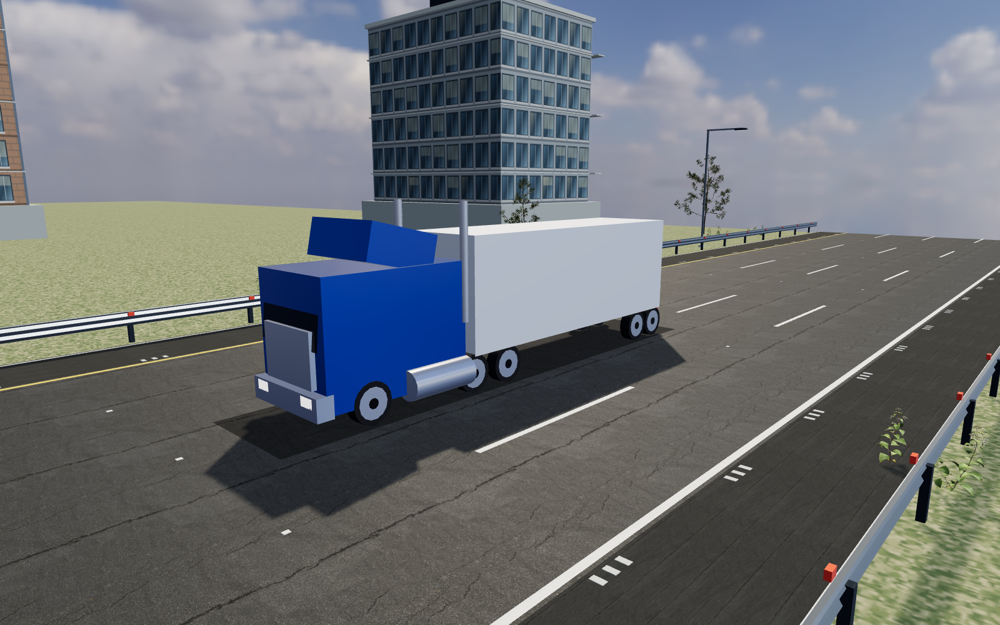

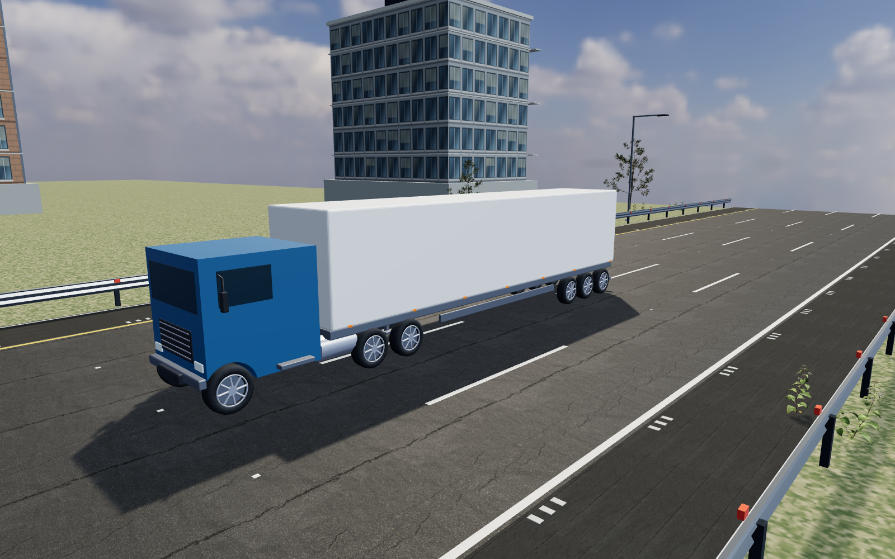
Actual moving collision

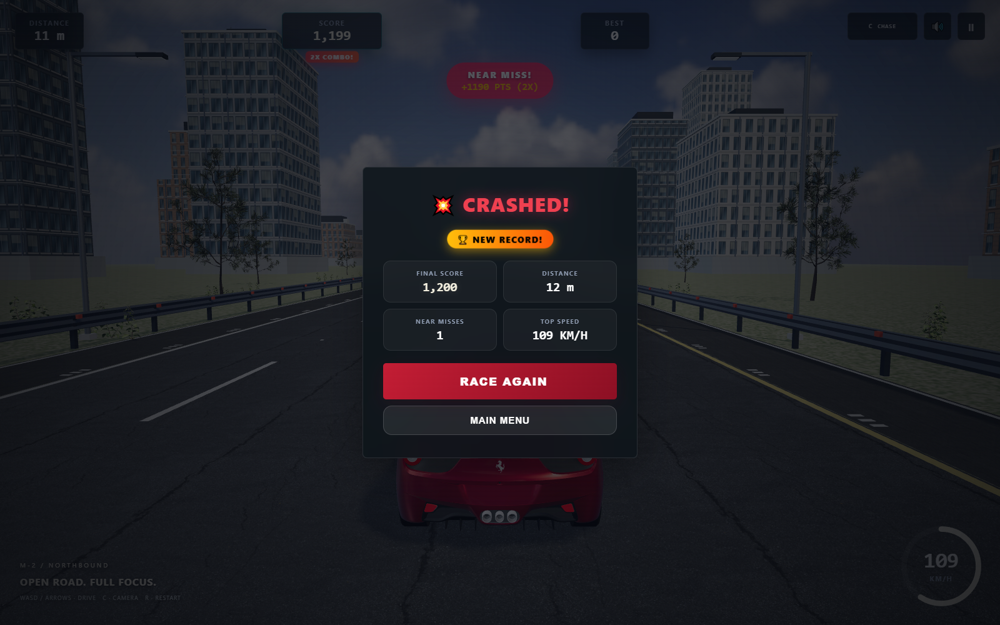
Measured comparison
| Camera | Before FPS | After FPS | Draw calls before → after |
|---|---|---|---|
| Chase | 58.53 | 59.93 | 985.93 → 553.05 |
| Cockpit | 59.33 | 59.93 | 953.68 → 537.03 |